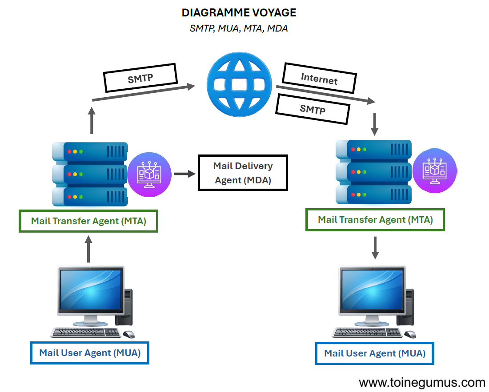
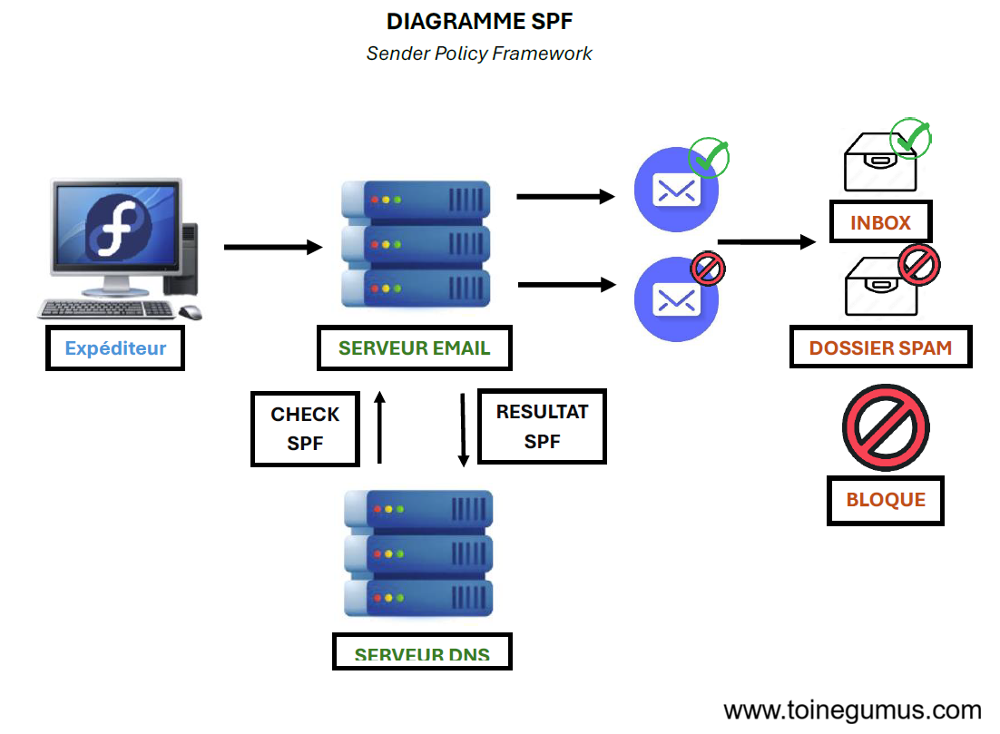
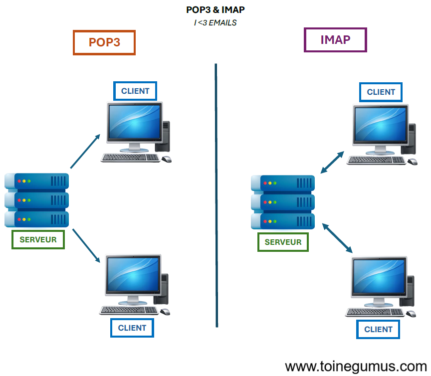

On l'utilise tous les jours, pourtant l'email est l'une des technologies les plus anciennes du web (le premier email a été envoyé en 1971). Comme nous l'avons vu dans l'anatomie d'une requête web, Internet repose sur des protocoles bien définis. L'envoi d'emails ne fait pas exception à la règle, il repose sur SMTP.
SMTP
Simple Mail Transfer Protocol (SMTP) est le protocole utilisé pour envoyer des messages d'un serveur à un autre. Il définit comment un serveur d'envoi communique avec un serveur de réception pour transférer un email etc...
Contrairement à une messagerie instantanée, le mail n'est pas "poussé" directement au destinataire, ou avec un seul serveur en tant qu'intermédiaire. Il passe par une série de relais.
Le voyage étape par étape
Quand vous cliquez sur "Envoyer", le processus commence par le MUA (Mail User Agent), votre client mail (comme Infomaniak Mail ou Proton Mail) qui prépare le message. Ensuite, le MTA (Mail Transfer Agent) prend le relais. Votre serveur d'envoi reçoit le mail et cherche le serveur du destinataire grâce à l'enregistrement DNS MX (allez voir mon article sur le DNS PROMIS c'est intéressant). Lors du transfert, votre MTA discute directement avec le MTA de destination via SMTP pour lui confier le message. Enfin, le MDA (Mail Delivery Agent) intervient : le serveur final stocke le mail en toute sécurité dans la boîte de réception du destinataire, voici un diagramme pour mieux illustrer ces propos :

Pourquoi mes mails vont-ils en spam ?
Le SMTP original n'avait aucune sécurité, ce qui signifie que n'importe qui pouvait se faire passer pour n'importe qui (oui oui, changer l'expéditeur est un jeu d'enfant). Pour corriger cela, plusieurs remparts ont été créés. La première étape est la vérification de propriété, qui consiste à prouver à des fournisseurs comme Infomaniak ou Proton que vous possédez bien le domaine. Ensuite, les protocoles SPF, DKIM et DMARC sont mis en place comme couches essentielles pour empêcher l'usurpation de votre identité par email (spoofing).

POP3 vs IMAP
Une fois le mail arrivé, il faut pouvoir le lire (ça serait bien quand même). C'est là qu'interviennent deux autres protocoles. Vous pouvez utiliser POP3, qui télécharge le mail sur votre appareil et le supprime généralement du serveur. Alternativement, vous pouvez utiliser IMAP, qui synchronise les messages afin que ce que vous voyez soit un reflet exact de ce qui est sur le serveur, ce qui est idéal pour utiliser plusieurs appareils.

(J'espère que cet article vous a plu M. Amarcher, sachez qu'en faisant ces recherches mon intérêt pour le fonctionnement des protocoles email a vraiment grandi, très intéressant !)
Relais SMTP : Un serveur intermédiaire qui transfère les emails.
Spoofing : Technique consistant à usurper l'identité d'un expéditeur.
Port 587 : Le port standard recommandé aujourd'hui pour l'envoi de mails sécurisés. (Oui je ne savais pas où le mettre dans l'article donc j'en parle ici...)